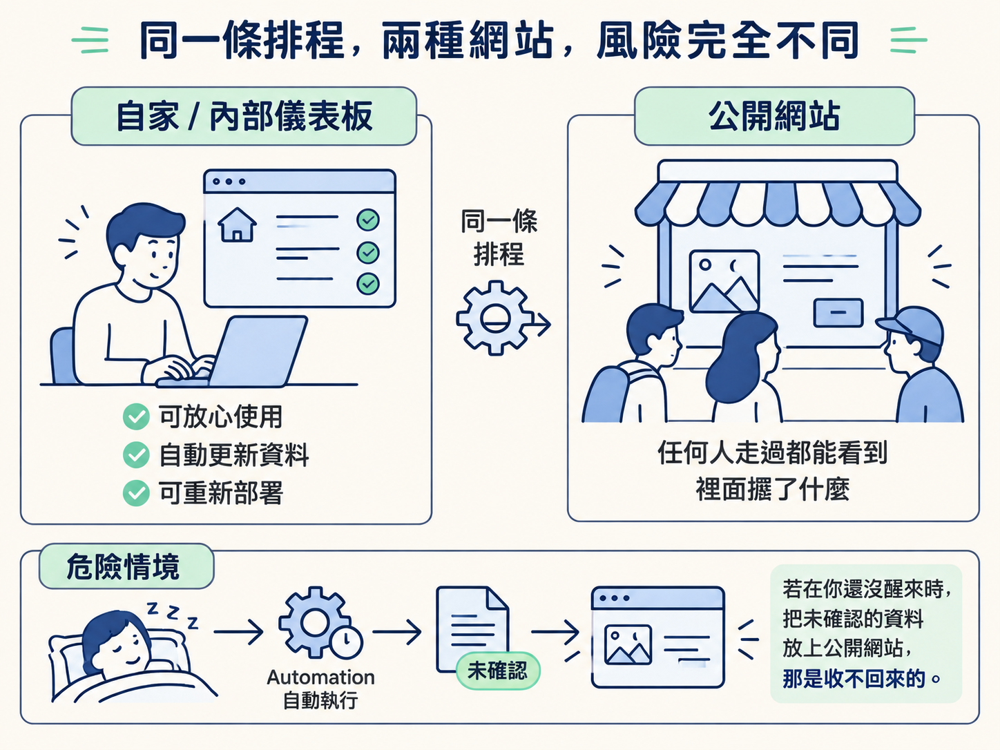
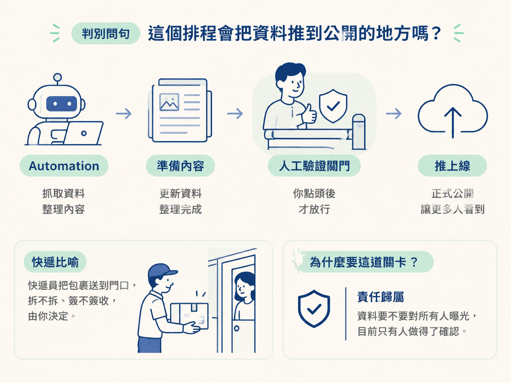
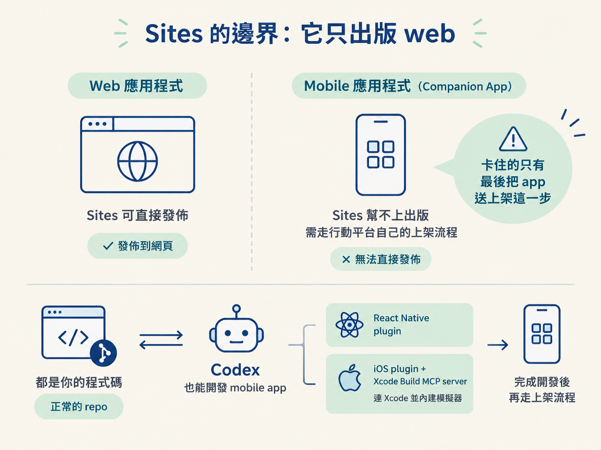

能判斷一條排程該不該自動重新部署，並說清楚 Sites 這個發佈管道只出版 web，以及它對 companion app 的影響。
上一課那條示範 automation 是這樣運作的：每天早上八點抓一次資料、更新網站內容、接著自動重新部署。整條流程沒有任何人工介入，像一台設定好的自動灑水系統，時間一到就自己灑完一圈。
這在自家的儀表板上非常好用。問題出在網站性質改變的那一刻：當它變成公開網站，同一條排程就從「方便」變成「危險」。因為公開網站是個敞開的櫥窗，任何人走過都看得到裡面擺什麼；如果 automation 在你沒醒來的時候，把一份還沒確認過的資料擺了上去，那是收不回來的。

於是我們要做的決定只有兩個，而且都是取捨：什麼情況可以把重新部署交給排程，什麼情況一定要人看一眼；以及 Sites 這個發佈管道能幫你到哪一步、哪一步它不管。
把兩種情境並排看，差別就很清楚了。技術上兩邊都做得到自動重新部署，真正的分歧在「資料曝露給誰」。
| 非公開（自己或內部看） | 公開網站 | |
|---|---|---|
| 可以自動更新資料嗎 | 可以 | 可以，但資料要先確認可分享 |
| 可以自動重新部署嗎 | 可以，整條流程自動跑完 | 不行，必須先經過人工驗證 |
| 出錯的代價 | 低，最壞就是自己看到錯字 | 高，不該公開的資料會對外曝光 |
| 人的角色 | 完全放手 | 在「推上線」前把關一次 |
注意最後那格的措辭：公開站並不是「不能用 automation」。資料抓取、整理、更新這一段照樣交給它，只是最後推上線的那一腳，要由人來決定。就像快遞員可以幫你把包裹送到門口，但要不要拆、要不要簽收，是你的事。
動手前問自己這一句就夠了：這個排程跑完之後，產出會不會出現在公開可見的地方？
答案是「不會」：只更新你自己看的儀表板、內部工具頁，或者只是在本機重整一份資料，那整條流程可以自動跑完，重新部署也包含在內。課程示範的 Mission Control 就是這一類，它用的是虛構資料，每天刷一百遍也沒差。
答案是「會」，那就把人工驗證插在重新部署之前。automation 的職責變成「把新的資料準備好、通知你來看」，而不是「推上線」。你點頭之後才放行。

這條關卡之所以要存在，理由不是技術限制，而是責任歸屬：公開網站上的內容一旦上線，等於對所有人負責，而「確認這份資料可以被所有人看見」這件事，目前只有人做得了。
「公開站不能自動重新部署」有個前提：資料是活的、會變動的。如果網站根本不用即時資料，只是一份固定的內容，例如一個純靜態的行銷頁、一份你早就確認過不會改動的說明文件，那重新部署不會帶進任何沒被看過的新東西，這條限制自然不適用。
另一種情況是資料會變，但變動範圍完全可預期，而且內容早就排除敏感項目。這時候要不要保留人工關卡，是一個判斷題，不是硬規則。
不論哪一種，回到同一句話：重新部署這個動作，會讓什麼東西對外曝光？那個東西你確認過了嗎？答得出來，就能自動化。
另一個容易被誤會的地方，是 Sites 的管轄範圍。用 Codex 做 mobile app 完全沒問題，你可以裝 React Native plugin，或者功能完整的 iOS plugin，它會接上 Xcode Build MCP server 連到 Xcode 看 build log，還內建 iOS 模擬器，等於把整套行動開發環境搬進來。
但 Sites 的工作只有「把 web app 發佈出去」。要一個網站的行動版 companion app？Sites 幫不上出版這一塊，行動應用有自己的上架流程，你得另外走一次。
| web app | mobile app | |
|---|---|---|
| Codex 能不能開發 | 可以 | 可以（React Native plugin、iOS plugin + Xcode Build MCP） |
| Sites 能不能出版 | 可以 | 不行，要走行動平台自己的上架流程 |
| 程式碼歸誰 | 你擁有一份正常的 repo | 同樣是你的程式碼 |
對你有利的一點是：Sites 產出的是一個正常的程式碼 repo，程式碼是你的。所以你可以直接請 Codex 看這份 repo，據此建立 companion app，網頁版與行動版要共用多少邏輯、設計系統怎麼延續，你手上都有材料可以談。卡住的只有最後那步「把 app 送上架」，而那本來就和 Sites 無關。

課程錄製時，Sites 還在公開測試階段，功能可以正常用，只是官方仍在持續加功能，定價也還沒定案。那個時間點從 Plus 訂閱起是無限使用的；正式推出後預期會依用量（很可能是儲存空間）收費，自訂網域另外加價。這些數字之後可能調整，只要記住走向就好：現在包含在訂閱裡，未來依用量計費。
走完這五課，你手上應該有一整套用 automation 做常駐維護的本事：知道它為什麼存在、怎麼建立、run mode 與節奏怎麼選、怎麼串 plugin 做每日工作，以及哪些邊界不能碰。最實際的下一步，是挑一件你每天都在做、又容易忘記的例行小事，把它變成一條 automation 跑跑看，從不踩線的那種開始。